Enterprise Workflow Automation Roadmap
BPMN 2.0 & DMN 1.3 Architecture for Academic Governance & Banking Loan Origination
Academic capstone project governance across 5 departmental lanes, handling student proposals, plagiarism detection, committee evaluations, and automated faculty guide matching.
End-to-end retail banking origination orchestrating customer interactions with 4 internal bank lanes via message flows, 4-way parallel due diligence, and Core Banking settlement.
Every slide combines high-resolution Camunda diagrams with numbered visual markers, element justifications, gateway conditions, and complete failure path resolutions.
Project 1: Problem Statement & Boundaries
Assignment 1 • Student Project Approval & Allocation System (Official Specification)
Ends when: A guide is allocated and confirmed, or proposal is closed as rejected / lapsed.
- • Duplicate Topics: Multiple teams choose identical projects unnoticed.
- • Invalid Teams: Students apply alone or in groups of 5+, violating rules.
- • Evaluation Gridlock: Committee reviews take weeks with zero SLA tracking.
- • Faculty Burnout: Popular professors get overloaded; junior faculty get 0 teams.
- • Automated Service Task: Checks team size (2–4) and student uniqueness instantly.
- • Plagiarism Engine: Flags topic similarity exceeding 30% threshold.
- • Strict Boundary Timers: 3-day reminder + 7-day HoD emergency escalation.
- • DMN Guide Matching: Domain-based matching + 3-project quota cap.
Project 1 • Simple 5-Step Demo Flow (The Happy Path)
High-Level Mental Model Before Inspecting Complex BPMN 2.0 Swimlanes
| Step # | Stage Name | Primary Actor | Input Data | BPMN Construct | Output / Next Action |
|---|---|---|---|---|---|
| Step 1 | Proposal Submission | Student Team Lead | Title, Domain, Abstract, 2–4 Member IDs | User Task (Camunda Form) | Emits proposal token to validation service |
| Step 2 | Eligibility & Plagiarism | System + Coordinator | Student Academic Records, Archive DB | Service Task + Exclusive Gateway | Passes clean proposals (≤30% match) to Committee |
| Step 3 | Committee Evaluation | 3-Member Faculty Panel | Rubric Scores (Novelty & Feasibility 1–10) | User Task + 3d/7d Boundary Timers | Approved proposal moves to Guide Allocation |
| Step 4 | Faculty Guide Matching | DMN Engine | Project Domain, Guide Rank, Current Quota | Business Rule Task (guide_allocation_rules.dmn) | Matches best available professor with capacity <3 |
| Step 5 | Mentorship Confirmation | Faculty Guide | Allocation Request Email / Task | Send Task + User Task + 3d Timer | Guide accepts → Confirmed & Master DB updated |
Project 1 • Forms & DMN Decision Table
Actual Camunda Form Definitions and Business Rule Table (Hit Policy: First)
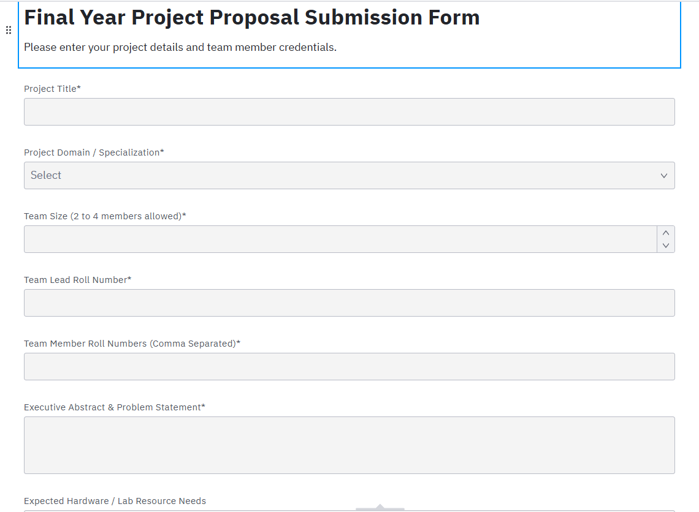
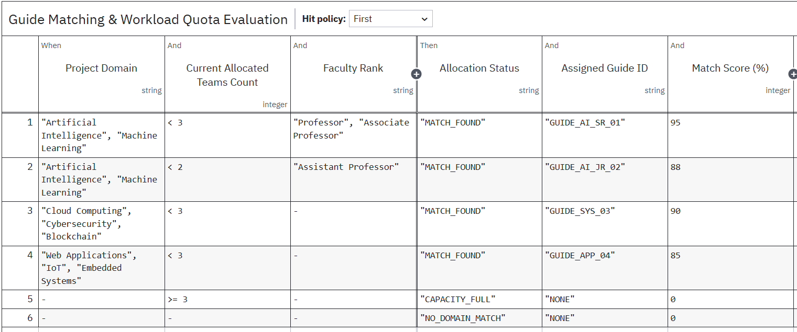
Project 1: Complete BPMN 2.0 Process Diagram
Student Project Approval & Allocation • Full 5-Swimlane Collaboration Pool in Camunda Modeler
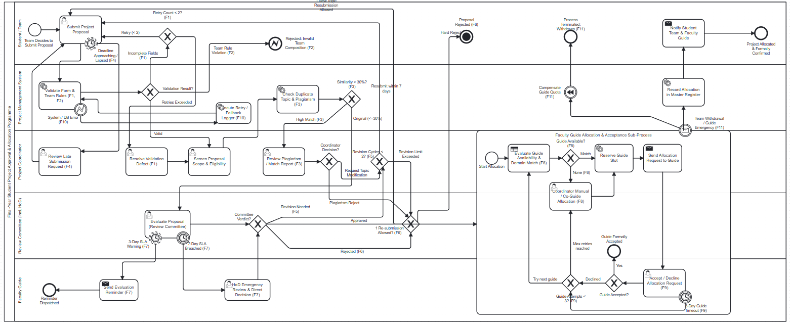
Project 1 • Step 1: Proposal Intake & Eligibility Screening
Diagram Elements Marked Above Screenshot • Detailed Technical Architecture
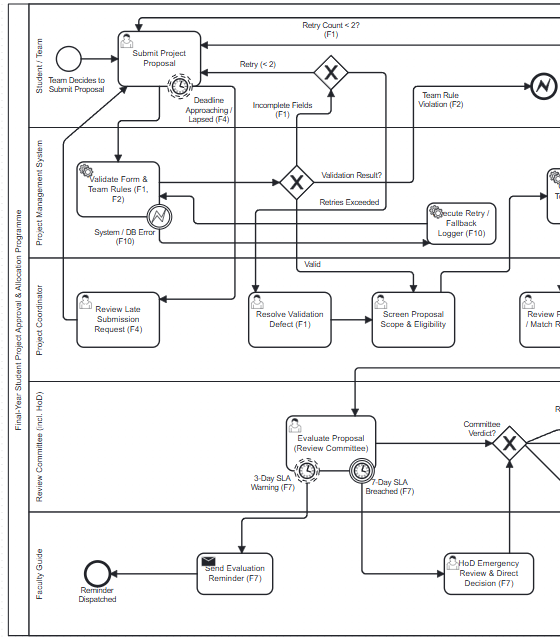
Project 1 • Step 2: Plagiarism Detection & Committee Evaluation
Diagram Elements Marked Above Screenshot • Detailed Technical Architecture
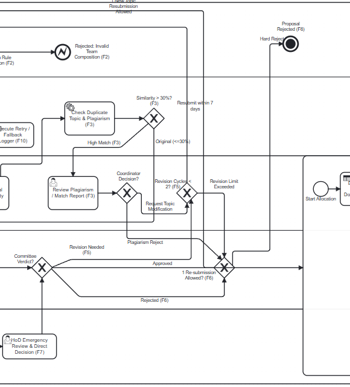
Project 1 • Step 3: Guide Allocation & Quota Rollback
Diagram Elements Marked Above Screenshot • Detailed Technical Architecture
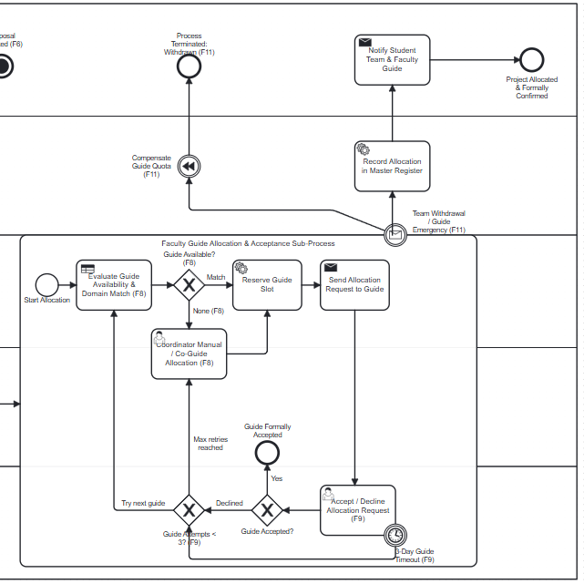
Project 2: Problem Statement & Boundaries
Assignment 3 • Loan Origination & Approval System (Official Specification)
Ends when: Loan is disbursed, or application is rejected, withdrawn or has lapsed.
- • 2 to 3 Week Turnaround: Sequential verification creates massive drop-off.
- • Delayed Fraud Checks: Sanctions screening happens late, wasting manual effort.
- • Rigid Declines: High DTI applicants get rejected instead of offered counter-terms.
- • Disbursement Glitches: Gateway timeouts risk double debits or lost funds.
- • 4-Way Parallel Due Diligence: KYC, Bureau, AML & Income execute in parallel in <45s.
- • AML Kill Switch: Sanctions hit terminates all parallel tokens immediately.
- • DMN Counter-Offers: Automated counter-offer path preserves customer relationships.
- • Transactional Sub-Process: CBS disbursement with operational hold and fee reversal.
Project 2 • Simple 5-Step Demo Flow (The Happy Path)
High-Level Mental Model Before Inspecting Complex Banking Choreography
| Step # | Stage Name | Primary Actor | Input Data | BPMN Construct | Output / Next Action |
|---|---|---|---|---|---|
| Step 1 | Loan Application | Retail Applicant | Requested Amount, Term, Salary, ID Proofs | Message Start Event (External Pool) | Triggers document completeness check |
| Step 2 | Parallel Verification | 4 Background Services | Govt DB, CIBIL REST API, Sanctions Watchlist | Parallel Gateway Split & Join (AND) | Synchronizes 4 verification streams in <45s |
| Step 3 | DMN Risk Scoring | DMN Engine | Credit Score (≥750), DTI (≤40%), Loan Quantum | Business Rule Task (loan_eligibility_rules.dmn) | Calculates Risk Tier A/B/C and recommended rate |
| Step 4 | Underwriting Approval | Underwriter / Committee | Risk Tier, Collateral Valuation, Exceptions | User Task + 48h SLA Boundary Timer | Generates official Sanction Letter & schedule |
| Step 5 | Disbursement & Settlement | Core Banking System | E-Signed Agreement, Verified Bank Account | Transactional Sub-Process + Service Tasks | Penny drop → CBS ledger created → NEFT credited |
Project 2 • Forms & DMN Decision Table
Actual Camunda Form Definitions and Business Rule Table (Hit Policy: First)
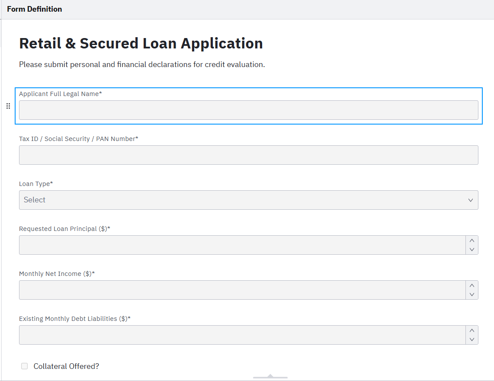
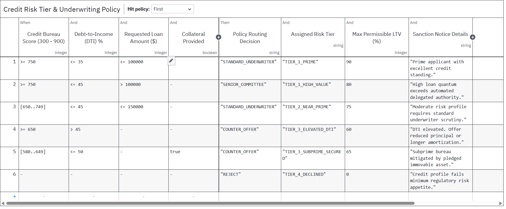
Project 2: Complete BPMN 2.0 Process Diagram
Retail Banking Loan Origination • 2 Pools, 4 Internal Lanes & External Credit Bureau
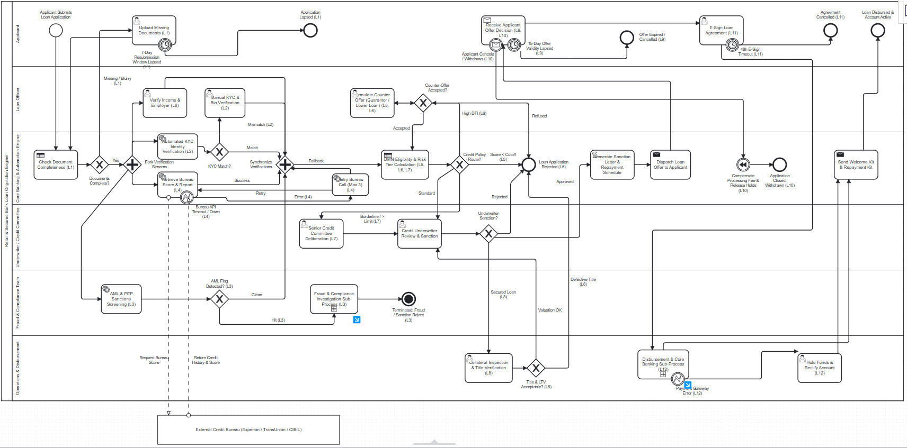
Project 2 • Step 1: Intake & 4-Way Parallel Due Diligence
Diagram Elements Marked Above Screenshot • Detailed Technical Architecture
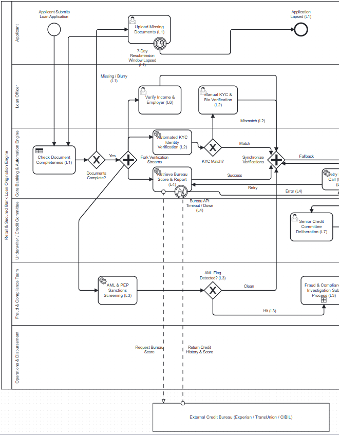
Project 2 • Step 2: DMN Risk Scoring & Credit Underwriting
Diagram Elements Marked Above Screenshot • Detailed Technical Architecture
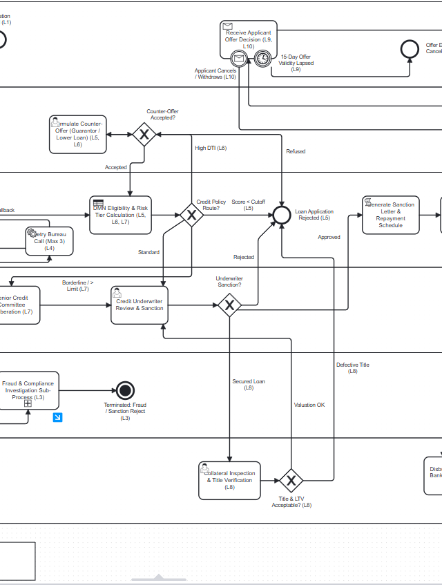
Project 2 • Step 3: Offer Acceptance, E-Sign & CBS Disbursement
Diagram Elements Marked Above Screenshot • Detailed Technical Architecture
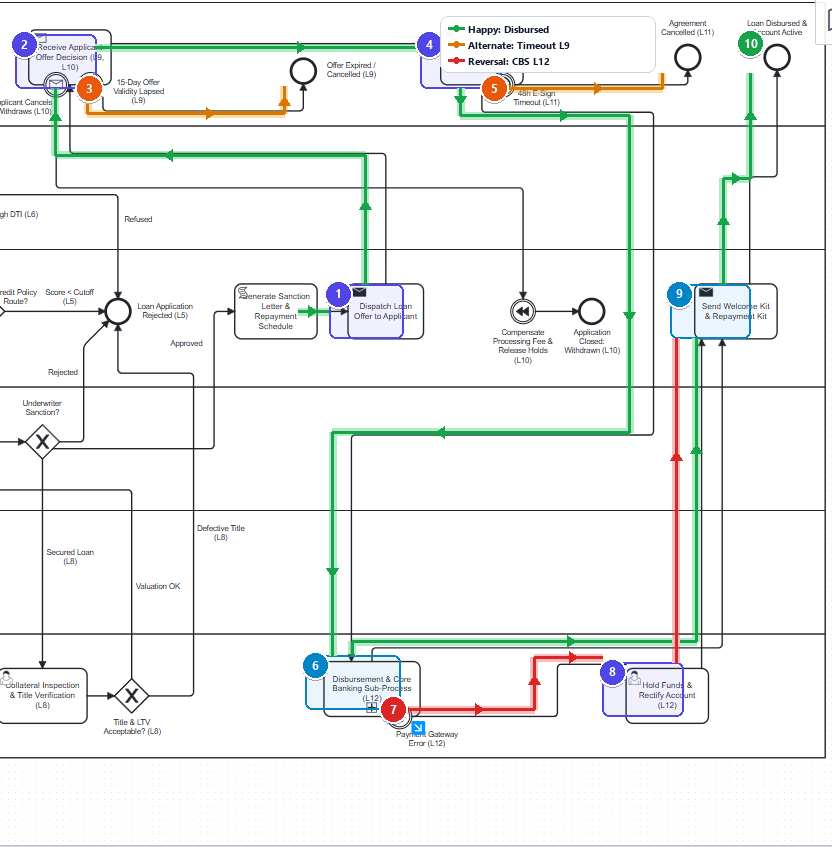
Failure Modes & Solutions Register (Evaluation Rubric)
Official Mapping of Failure Points & Solutions from BPMN_Project_Assignments1.docx
| ID | Failure Point | BPMN Solution & Construct |
|---|---|---|
| F1 | Missing Fields | XOR gateway → Student retry loop (max 2 attempts) → Coordinator escalation. |
| F2 | Invalid Team Size | Exclusive gateway → Error End Event ("Rejected: Invalid Team"). |
| F3 | Duplicate Topic (>30%) | Coordinator review task → Request modified topic or hard reject. |
| F4 | Intake Deadline | Boundary timer event (14 days) → Late submission approval by coordinator. |
| F5 | Committee Revision | 7-day revision loop counter → Capped at max 2 cycles. |
| F6 | Committee Reject | Notification → 1 new topic resubmission allowed, else Terminate End Event. |
| F7 | Review Delayed | Non-interrupting 3d timer reminder + Interrupting 7d timer escalates to HoD. |
| F8 | No Guide / Load Full | DMN returns "none" → Coordinator allocates manually or priority waitlist. |
| F9 | Guide Declines / Silent | 3-day boundary timer → Exclude guide, retry DMN (max 3 times) → Manual. |
| F10 | System / DB Error | Error boundary event → Retry 3 times → Fallback logger. |
| F11 | Withdrawal | Boundary message event → Compensation event decrements guide quota. |
| ID | Failure Point | BPMN Solution & Construct |
|---|---|---|
| L1 | Incomplete Docs | 7-day boundary timer → Loop on upload → End "Application Lapsed". |
| L2 | KYC Mismatch | XOR gateway → Manual verification task by loan officer. |
| L3 | AML / Fraud Sanctions | Sanctions hit → Terminate End Event kills all concurrent branches. |
| L4 | Credit Bureau Down | Error boundary event → Retry 3 times → Offline bureau queue. |
| L5 | Low Credit Score | XOR gateway → Counter-offer with guarantor or reduced loan quantum. |
| L6 | High DTI Ratio | Offer longer tenure or reduced amount → Re-score loop (max 1). |
| L7 | High Value (>$100k) | Escalate to Senior Credit Committee with 48h SLA boundary timer. |
| L8 | Defective Title / LTV | Revalue, reduce LTV → If title defect persists, reject application. |
| L9 | Offer Unaccepted | 15-day boundary timer on receive task → End "Offer Expired". |
| L10 | Withdrawal | Boundary message → Compensation reverses fees & releases holds. |
| L11 | E-Sign Timeout | 48-hour boundary timer → Resend (2 attempts), then cancel offer. |
| L12 | Disbursement Error | Account check → Error boundary event holds funds & reverses ledger. |